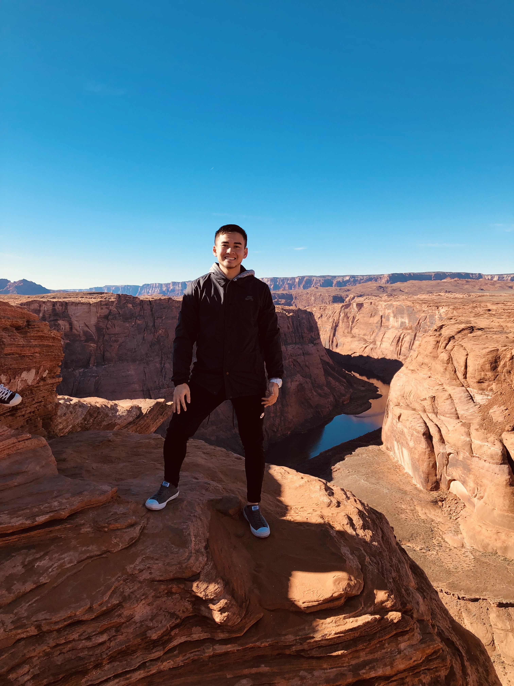

Intro
Hello! My name is Jesse Vo and I am from Garden Grove, California. I am currently a student enrolled in Thinkful's software engineer program. My goal for the program is to obtain the skills necessary to become a full fledged software engineer that can help clients and companies improve their businesses. Please contact me if you need any additional information!
